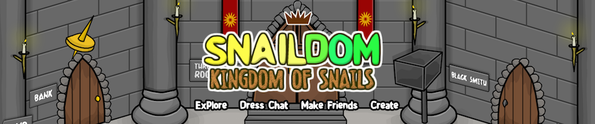

Popular Questions
- How do you login? Press the Login link at the top right of the page. Select a world to play in and then login on the Snaildom game.
- How do I buy clothes and shells? There is a shop at the West Forest where you can buy clothes and shells.
- How do I buy furniture? There is a furniture store at the West Forest where you can get furniture every month.
- Where are the games? Several games are already in the forest, although more are to be made. Ask a Knight at the Royal Courtyard where the games are.
- How do I get Metal? Metal ores that create armour and weapons can be mined at the Black Mine. To get there, open your map of the forest and go to this location:
- How do I get Gold? Playing Missions, solving puzzles and completing quests rewards you with gold. There are puzzles at the Library and the Shadow Wood, there are missions at the black mine and the west forest (outside the Library) and there are quests all over the forest.*
- Why does it say "Connection Timeout"? That means either your internet isn't working or Snaildom is down. Email support@snaildom.com about the problem and it should be fixed soon.
- Why did it say "Connection Lost"? This could mean that your internet cut out or Snaildom was reset for an update. Email support@snaildom.com about the problem if it carries on.

Need more help?
Ask for help on the DamenSpike GAMES HQ Community Forumsor email support at support@snaildom.com
* There is currently only one quest in the game but more are sure to come over the passing weeks.